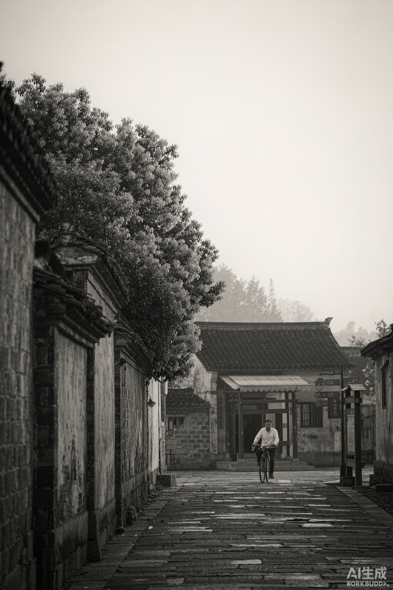
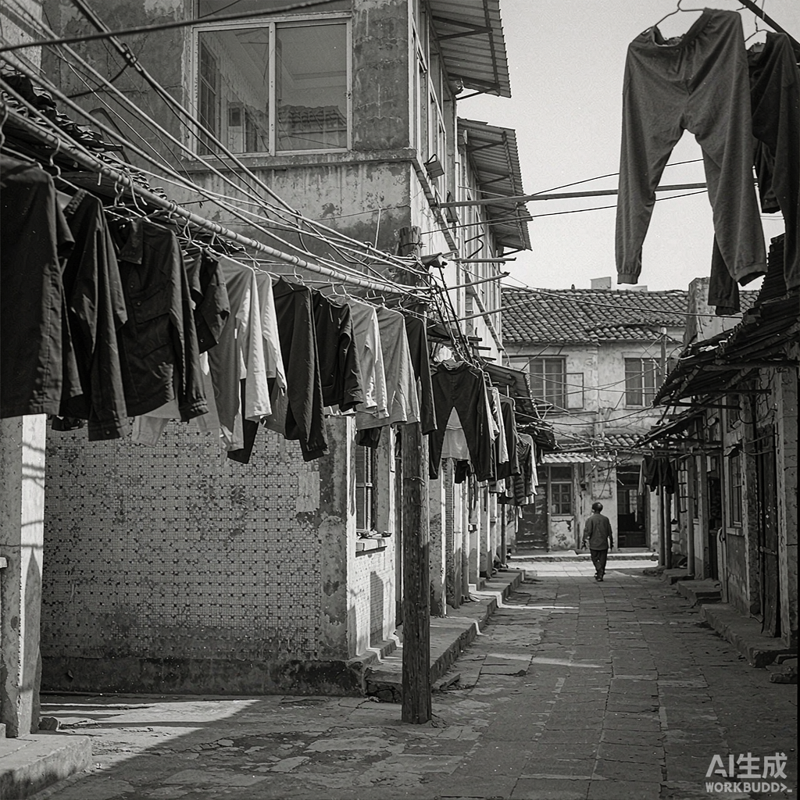
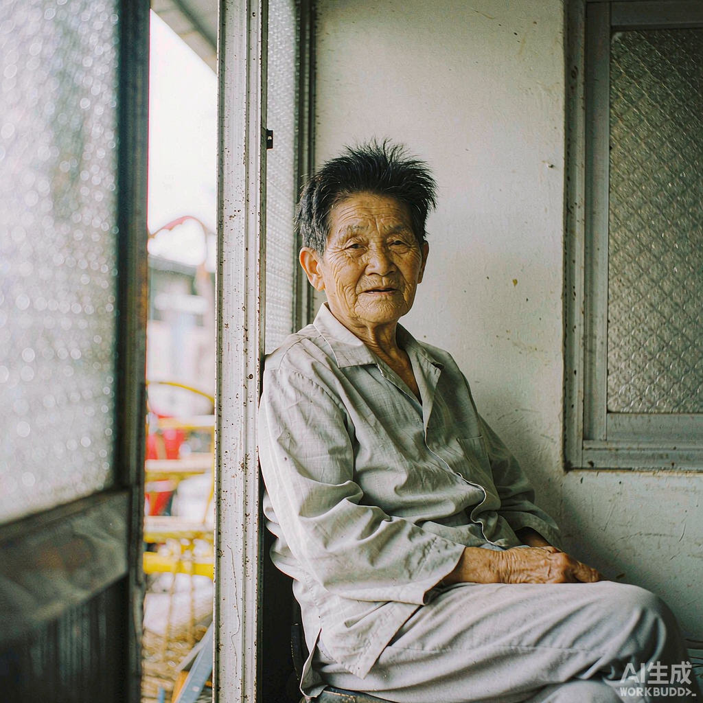
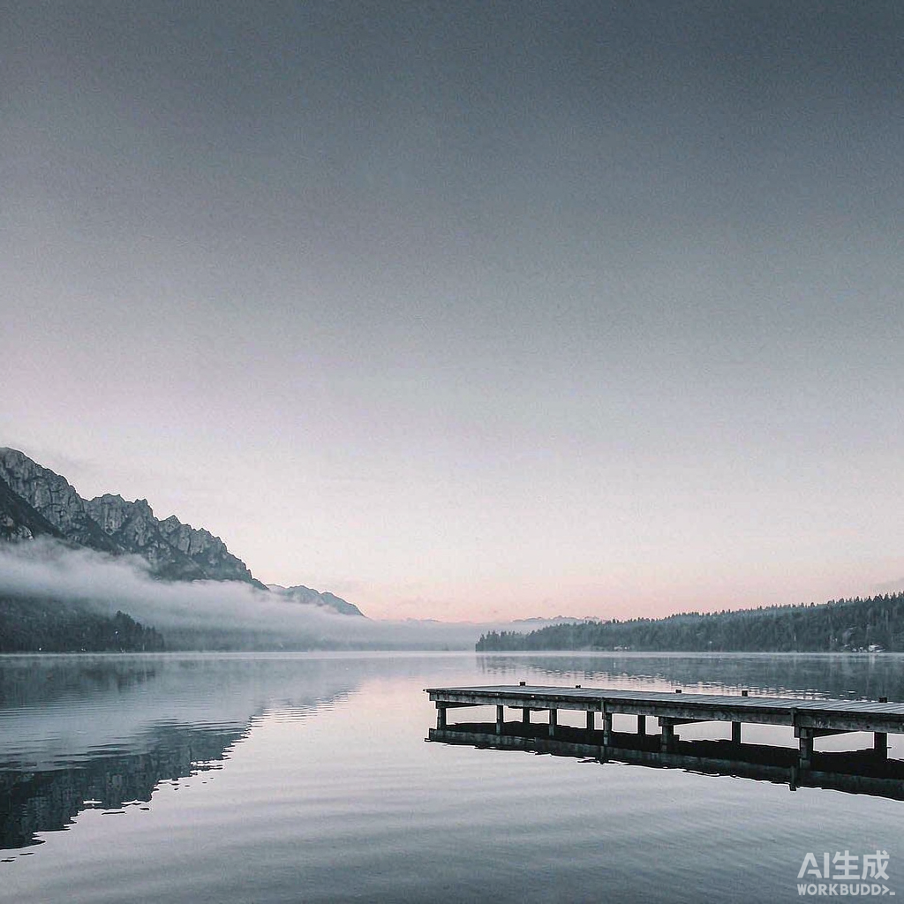

ABOUT / 自我介绍
在城市与人的缝隙里，
练习准确地看见、克制地表达。
南通大学新闻学本科四年级。具备政府宣传部门、AIGC 企业两段实习经历；擅长纪实影像、短视频项目统筹、新闻采写、AIGC 新媒体运营，熟悉选题策划、摄制、内容分发完整链路。作品刊登于天眼新闻、南通发布等官方平台，拥有内容矩阵搭建、赛事专题项目统筹实践经验，持续关注地方记忆、民生纪实类题材。
姓名 罗三三
院校 南通大学
方向 影像 / AIGC 新媒体运营 / 后期 / 编导
邮箱 sansanluo33@yeah.net
院校 南通大学
方向 影像 / AIGC 新媒体运营 / 后期 / 编导
邮箱 sansanluo33@yeah.net
* 影像作品合集见页脚抖音二维码
01 / PHOTOGRAPHY
摄影
按主题翻阅 · 4 组主题 / 封面与内页均可替换
01

01 / 04
点击缩略页可直接跳转主题 · 左右箭头 / 键盘 ← → 翻页 · 移动端可左右滑动
02 / VIDEOGRAPHY
摄像
四部原创影像作品 · 点击右侧片名即可播放
02
 01 / SHORT FILM
01 / SHORT FILM
00:00 / 02:18
点击右侧片名或播放键，即可观看对应影片（B 站高清播放）。
SELECTED WORKS / 作品列表
03 / WRITING
文案
标注体裁、篇数与传播量，让文字能力可被衡量
03
01
新闻稿与新闻评论
校园融媒体中心实习期间，独立采写消息与评论 18 篇，其中 3 篇被校级平台头条转载。
2024—2026 · 18 篇 · 校级融媒体
02
深度报道与人物特稿
围绕老城改造与手艺人群体完成系列特稿，负责选题、访谈、资料核查与成稿。
2025 · 4 篇 · 约 1.2 万字

03
影评与非虚构书评
长期撰写影视与非虚构书评，单篇最高阅读 6,486，累计 9 篇两千字以上长评。
2023—2026 · 9 篇 · 单篇最高 6,486 阅读

04 / EDITORIAL DESIGN
排版
刊物跨页、活动海报与长图文的网格与字阶控制
04
01 杂志跨页 / 专题《城与河》 · InDesign
02 活动海报 / 讲座系列视觉
03 公众号长图文 / 数据版式
* 刊物编审、海报与长图文版式设计，涵盖公众号推文与数据可视化呈现
05 / POST-PRODUCTION
音视频后期处理
剪辑 / 调色 / 混音 · Premiere · DaVinci Resolve · Audition
05
剪辑 叙事结构与节奏粗剪 → 精剪 → 字幕 → 输出 · 成片 12 支
调色 统一影调与氛围一级校正 → 风格化 LUT → 分镜匹配
音频 人声与现场声处理降噪 → 响度统一 → 配乐与混音
交付规格 1080P / H.264 / 立体声 / 含字幕文件
06 / DIRECTING & PRODUCING
编导工作
从选题到成片：策划、脚本、现场统筹与交付
06
PROJECT 01 / 2025
《回声》乡村纪实短片
编导 / 脚本 / 现场统筹
以三位返乡青年的口述为线索，记录村庄一年的变化。独立完成选题论证、分镜脚本、拍摄调度与后期统筹。
4 人团队 · 拍摄 3 天 · 成片 03:42
PROJECT 02 / 2024
《一场演出》后台纪录
编导 / 采访 / 剪辑
跟随校园剧社从排练到公演，以后台视角呈现一台戏的生成过程。负责人物采访提纲与双机位调度。
6 人团队 · 跟拍 14 天 · 成片 06:18
WORKFLOW / 制作流程
选题 — 调研 — 脚本 — 拍摄 — 剪辑 — 成片
每个环节均可展开对应的过程材料：选题单、脚本、分镜表、拍摄计划与剪辑工程截图。